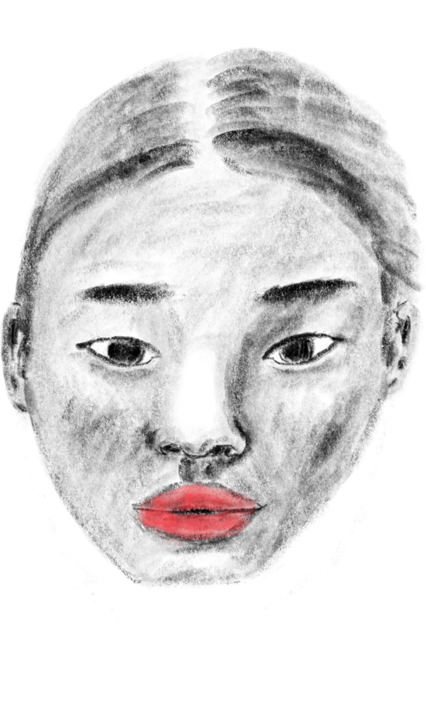
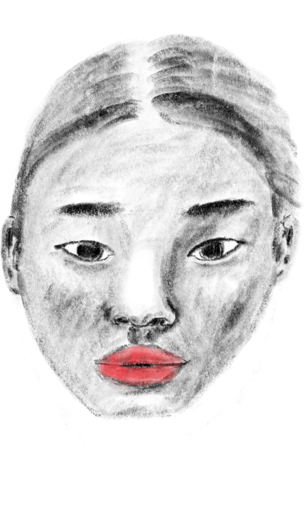
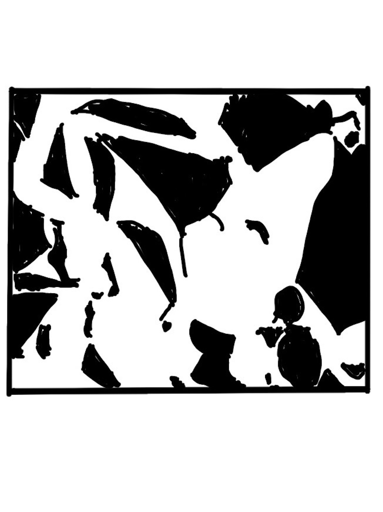
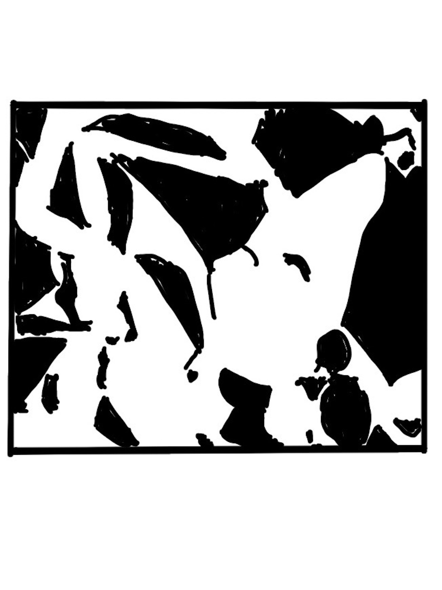
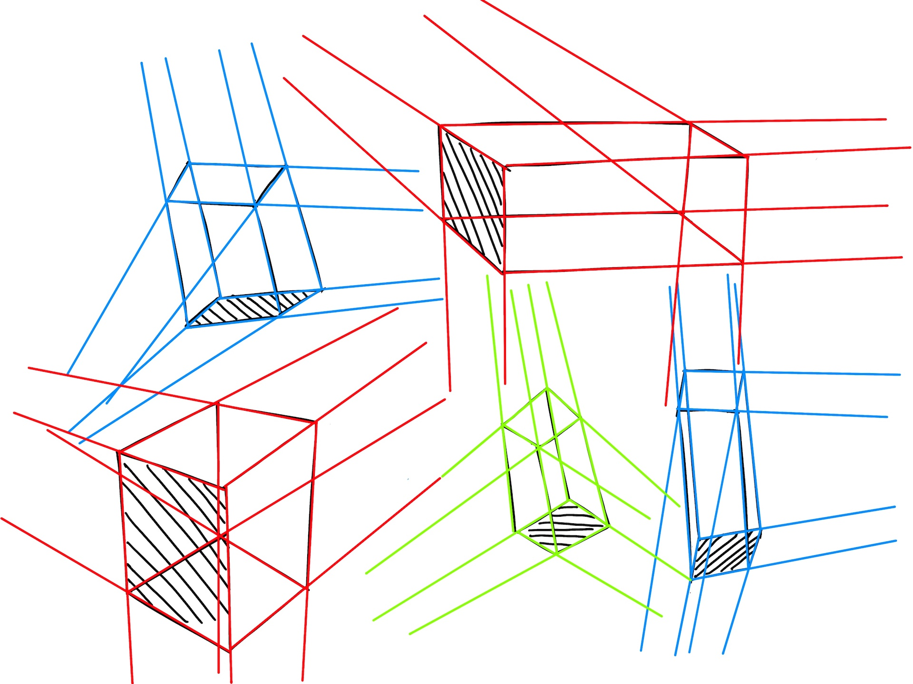

Perspective 1, Week 3
Week of July 18
8h 5m of drawing
After last week's diversion to get comfortable with drawing on the
iPad, I'm back to working through Draw a
Box
Tuesday
1h 10m
The reference I drew from today was actually one I drew 3 weeks ago. In
the pencil/paper sketch I didn't want to shade the left half b/c I was
worried I'd mess up the sketch. Comparing the two is a nice example of
how I'm more willing to shade more boldly on the iPad since erasing is
so much easier digitally
 

Wednesday
2h 5m
Not feeling too great with drawing ellipses and controlling their degree
of rotation. I'll do a page or two of ellipse tables next week to brush
up here
Thursday
45m
First time trying to draw textures -- I tried to draw the cast shadows
of a crumpled piece of paper from reference, but I don't think I did a
great job
 

Saturday
2h 25m
Textures: paper, scales, and rope


Sunday
2h 25m
Textures: once more!
